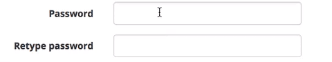

Typical Appearance
The most basic form of a string input field is a one-line rectangular box. When not selected, the box appears like an ordinary static rectangle (not very exciting at this point since it's not doing anything). A well-designed string input interface would signal the user that they can enter a value into the box by changing the cursor icon; typically, the cursor icon will change into an icon shaped like an uppercase "i" called an "I-beam pointer". This would show the user that they can click on the box and enter some string inputs. When the user clicks inside of the box, a blinking vertical bar (called a caret) would typically appear to signal the user that the text field is waiting for an input.
Try typing something into the string input field below:
Typical Behavior
Events
The border of string input fields typically glow blue when they are enabled (i.e, when the user clicks on it). Once enabled, the user can easily type whatever they wish into the field. While the user is typing, the caret remains visible to show the user where exactly they are inserting a key.The user can also highlight the text values they entered inside the string input field. Doing this allows the user to easily/quickly replace all or some of the text they entered.

State Diagram
Component in Action
Disabled string input field
Some string input fields can signal the user that their inputs are invalid by having a red border outline around the input field.
There are also some string input fields that will be disabled unless the user performs a specific action first. For example, a string input field will be disabled if the user has to first select from a variety of choices.
In the string input field below, the cursor will not change into an "I-beam pointer" since the user is not allowed to enter any texts. The field has also been greyed out (instead of white in color) to further show the user that they cannot use the text field. In supported browsers, such as Firefox or Google Chrome, when a cursor hovers above the text field, a "prohibition sign" will appear below the cursor to make it even clearer that the field is disabled.
Certain string input fields require the user to type specific text values. The text fields shown below require the user to enter the same text values in box text fields. Another aspect to note in the case below: some text values can be hidden from the user. Instead of actual alpha-numeric text values, they can be visually replaced by a symbol (in this case, black dots) in order to hide the password the user enters.
Only when the user enters an acceptable argument can the textbox change color into something more inviting.

Variants
Even though the string input field is a common interface for entering user values, there are other similar ways that a user can enter their own inputs.
- Menu items
Priority Metrics
Key Characteristics
Feedback
A well-designed string input field is one that shows that user when it is available to enter a value.